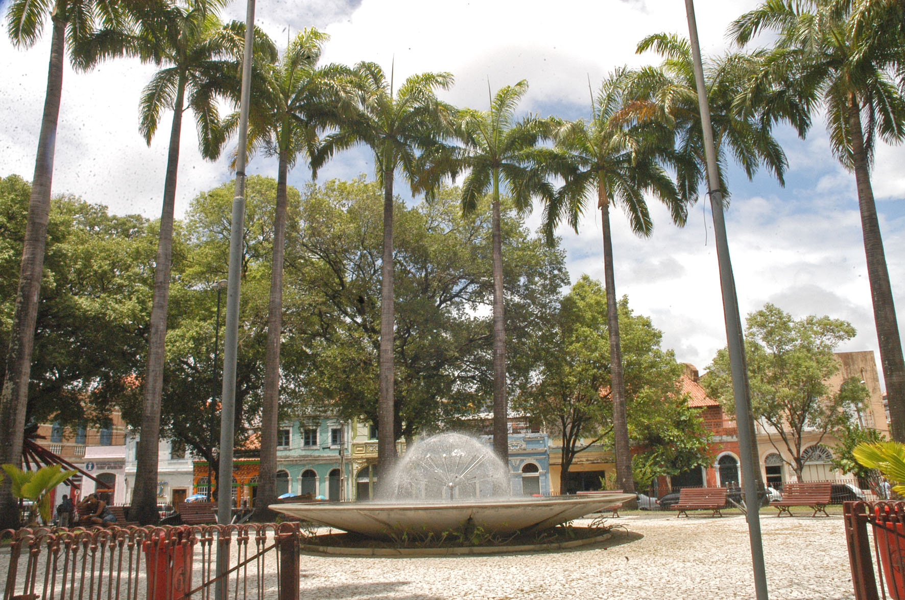

Ponte Maurício de Nassau

A Ponte Maurício de Nassau é uma bela ponte que liga o Recife Antigo à Ilha de Antônio Vaz. Ela oferece vistas incríveis do Rio Capibaribe e é um local popular para caminhadas e passeios de bicicleta.
Praça do Arsenal
A Praça do Arsenal é um espaço público encantador no coração do Recife Antigo. Rodeada por prédios históricos, cafés e lojas, é um lugar ideal para relaxar, apreciar a arquitetura local e desfrutar da atmosfera animada.
Voltar para Início